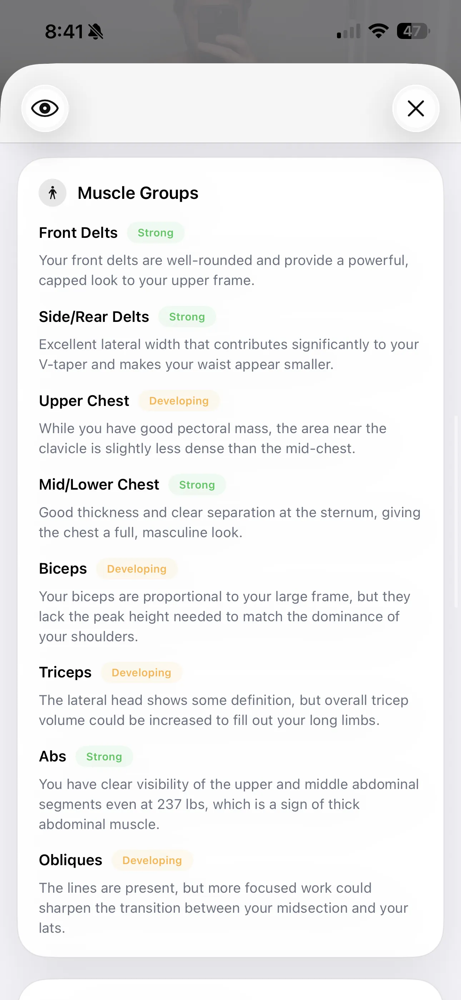

The All-New Deep Dive: Posture, Macros, and Goal-Driven Analysis
Body fat %, expanded muscle group scoring, posture analysis, and calculated daily macros — now tailored to your exact fitness goals.

The beta is live — try it free.
Join the Beta on TestFlightAI body composition analysis turns a single gym selfie into a comprehensive physique report. With the latest update to GainFrame's Deep Dive, that data is now more precise, more actionable, and entirely mapped to your goals. Let's take a look under the hood at how the AI body composition analysis works.
The New Baseline: Summary & AI Body Composition Analysis
The AI vision model doesn't just look at a photo in a vacuum anymore. It now factors in your age, height, and body weight to provide a highly personalized baseline.
The Executive Summary sets the stage, giving you a 2-to-3 sentence overview of what the AI sees — such as noting that "you possess an impressive amount of lean mass for 237 lbs, providing a top-tier foundation for a body recomposition." This is followed by a breakdown of your Body Composition Changes, pinpointing where you're holding fat and the state of your lean mass based on your training history.
Granular Muscle Group Scoring
In the past, we grouped muscles into broad categories. Now, Deep Dive analyzes specific sub-groups for a much more accurate physique assessment.

Instead of just "Chest" or "Shoulders," the AI now differentiates between:
- Upper vs. Mid/Lower Chest: Essential for building that complete "shelf" look.
- Front vs. Side/Rear Delts: Crucial for maintaining a healthy shoulder joint and achieving a wide V-taper.
- Abs vs. Obliques: Delineating between the core muscle blocks and the connective lines.
Each sub-group is rated (e.g., Strong, Developing, Needs Work) along with a specific observation of what the AI physically sees in the photo.
New: Posture & Symmetry Analysis
A great physique isn't just about size; it's about structural balance. Our brand new Posture & Symmetry section acts as a virtual physical assessment.

The AI now identifies subtle alignment issues that can lead to injury or aesthetic imbalances. For example, it can spot:
- Shoulder levelness across the clavicles.
- Abdominal midline shifting or structural lean.
- Internal rotation of the shoulders (very common for heavy bench pressers), prompting recommendations for rear delt mobility.
Goal-Driven Action Plans & Macros
Data without direction is useless. The updated Deep Dive now translates all of these visual observations into an incredibly specific action plan.

The Recommendations section takes your lagging body parts and gives you exact exercises to fix them. If your upper chest is rated as "Developing," the AI won't just say "train chest more." It will tell you to "start your chest days with Incline Dumbbell Presses (30-45 degree angle) to target the Upper Chest."
Finally, we've introduced Estimated Daily Targets and a Progress Trajectory.

By combining the AI's visual body fat estimate with your height, weight, and chosen fitness goal (Lose Weight, Gain Muscle, or Body Recomp), GainFrame now calculates highly accurate daily macro targets (Calories, Protein, Carbs, Fat). The Progress Trajectory then forecasts what you can expect over the next 12-16 weeks if you stick to the plan.
Available Now
The updated Deep Dive is live. Open GainFrame, import a recent progress photo, and tap the Deep Dive button to see your full AI body composition analysis — posture, symmetry, and personalized macro plan. See what your AI physique score means, or explore how to compare two photos with Deep Dive Compare.
Related Articles
Try GainFrame free
AI body composition from your progress photos. No account needed.
Join the Beta on TestFlightRequires iOS 17+ · iPhone only